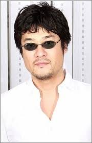
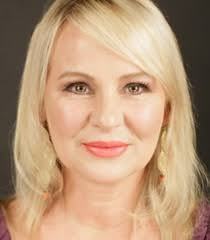

Welcome to the Sword Masters Voice Talent. In this database, you'll be able to discover some of the voice talents that the series creator hopes to recruit for this lofty project.
"Choose Your Voice-over language talent"
Japanese  Seiyuu English  Talent